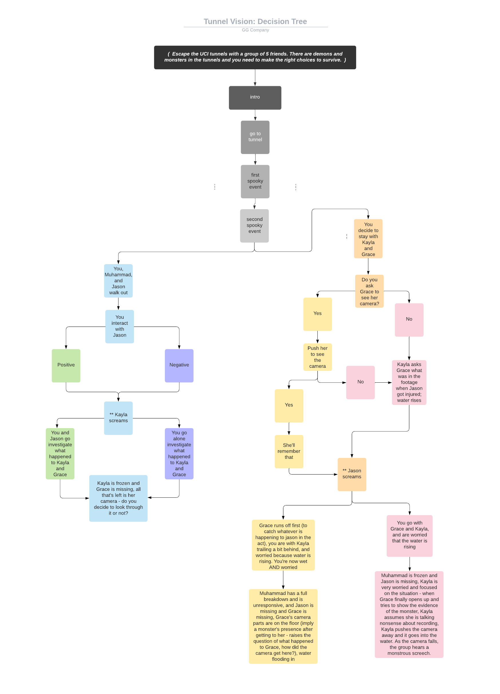
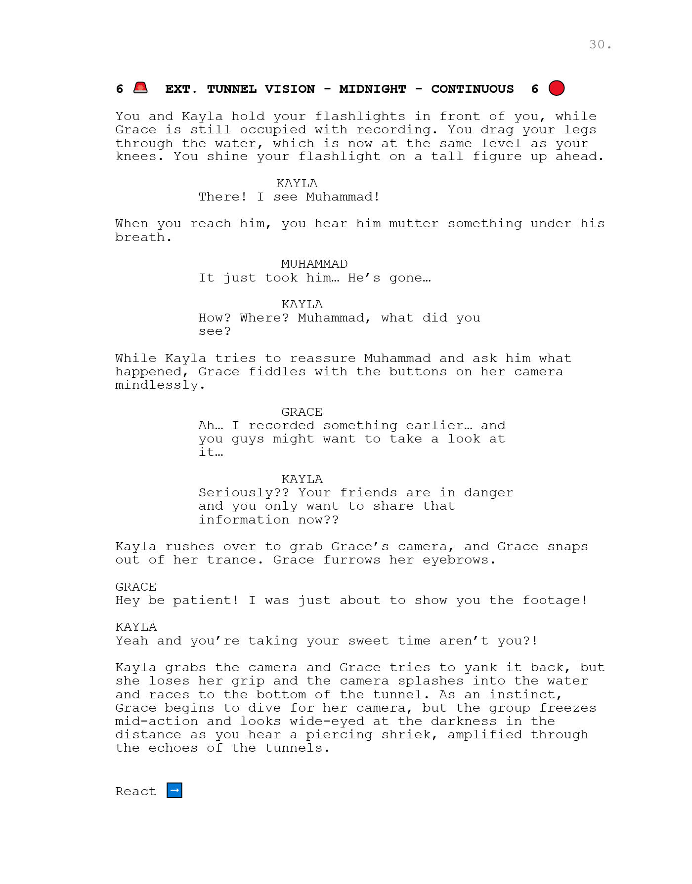
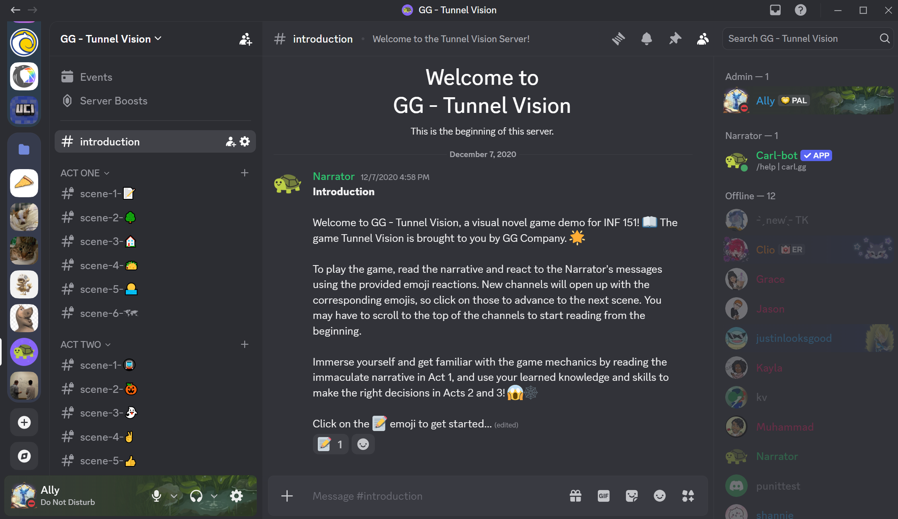

Overview
Tunnel Vision is a horror-themed “Choose Your Own Adventure” game demo designed as an interactive narrative experience. Instead of using a traditional game engine, we built the game inside Discord, turning text channels, reactions, and role permissions into the game's branching structure.
Players progress through the story by making choices through emoji reactions. Each choice grants access to different Discord channels, allowing players to follow different branches of the narrative and reach alternate endings.
Concept
We wanted to create a game that could be experienced remotely and shared easily with friends. Because the project was being developed during the pandemic, accessibility and ease of implementation were important constraints.
We chose a horror story inspired by the UCI tunnels and structured it around player decisions, creating a narrative where choices could change the direction and outcome of the story.
Interactive Narrative
Before implementing the story, we mapped out the branching structure using a decision tree. Each branch represented a different player choice and determined which scene the player would encounter next.
This helped us visualize the overall flow of the story, identify branching points, and organize the alternate endings before moving into implementation.

Story Development
After establishing the story structure, we collaborated on a multi-scene script and divided the narrative into individual scenes. We designed decision points that would allow players to take different paths through the story rather than following a single linear progression.
The final script contained two acts and more than 30 pages of narrative content, which we then translated into individual Discord channels.


Implementation
We originally considered building the game as a traditional HTML/CSS visual novel, but the implementation scope was too large for our timeline. We also considered Ren'Py and Inform 7, but both would require additional time to learn new tools and documentation.
We ultimately chose Discord because its existing channel and permission system could be adapted into a branching game structure. We used Carl Bot to assign roles based on emoji reactions, allowing player choices to unlock different channels and story branches.
Player Flow
Each scene was represented by a Discord text channel. Players read the current section of the story and reacted to a message to make their choice. The reaction triggered a role assignment, which granted access to the corresponding next channel.
This transformed Discord's existing social features into a simple interactive game system without requiring players to install additional software.
Testing & Iteration
Implementing the game revealed several issues that were difficult to anticipate during planning. Early versions of the Discord bot did not correctly assign access to new channels because it lacked the necessary server permissions.
We also discovered that overly long messages could prevent the bot from behaving as expected without providing a clear error. These issues required troubleshooting and changes to how we structured and implemented the narrative.
Player Experience Challenges
Testing also revealed a usability problem in the Discord format. When players gained access to a new channel, Discord could position them away from the beginning of the narrative, creating the possibility of accidentally seeing spoilers.
We could not fully control Discord's scrolling behavior, so we added instructions to the game's introduction explaining how players should navigate each new channel.
Final Result
The completed demo included 21 Discord channels and four alternate endings. Although we originally planned to build a larger story, limiting the project to the first chapter allowed us to complete a functional interactive experience within the available timeline.
The final implementation combined narrative design, branching choices, and Discord-based interaction into a game that could be played remotely and shared through a familiar platform.

Game Demo
Explore the original Tunnel Vision game demo and experience the branching story through the Discord server.
Play Tunnel Vision ↗Design Documentation
The project documentation includes the final decision tree, script, implementation details, project planning, and team process.
Reflection
Tunnel Vision taught me how the platform itself can become part of the game's design. Instead of building a traditional visual novel, we adapted Discord's existing communication and permission systems into a branching narrative framework.
The project also reinforced the importance of designing within realistic constraints. By changing our implementation approach, we were able to spend more time developing the story and interactive structure rather than learning a new game engine.